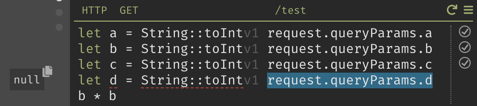
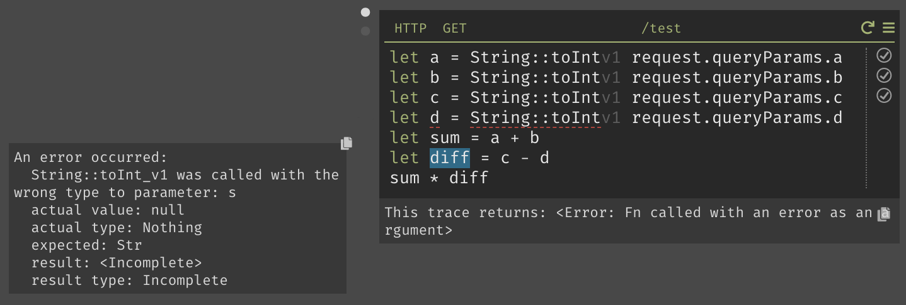
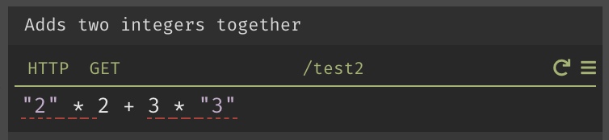

I worked with a backend developer to tackle this problem. I was responsible for designing a solution
and
implementing the frontend changes.
Background
This is from a request made to /test?a=1&b=2&c=3
You can pass data into functions and have them evaluated
Live values are kept, propagates through for later evaluation
Live value shows the developer what exactly will happen to the data passed into
their software.
Problem
Dark's structured editor prevents developers from entering syntactically invalid code. But they still can
have semantically invalid code.

Since the queryParams are ?a=1&b=2&c=3, d is not defined and therefore resulting in
null.
String::toInt expects you to pass in a String as an argument but gets a
null.
Many live values will be shown with errors all over, even if there is
just a single error in your codebase.

Since d is an error, any evaluation involving d will also result in the same error.
And the same error propagates through to other areas of the code.
The of the way the Dark evaluation engine is engineered is that later expressions don't get evaluated, and
the original error carries through.
Dark's evaluation engine will just carry the same error throughout the code.
How do we help developers find the origin of theirs errors?
Firstly, we want to alert the users when there is a semantic error.
Secondly, if an error is propagated from another place in the code, we want to make it loud
and clear where
in came from.
Signaling error in expression
Many code editors either highlight the line number on the
left, or show it on the right.
The same example is written in Swift. XCode's playground has something similar to our live values; it
highlights errors on the right near where the evaluated results are shown.
To the left of the we have live values, and the Error Rail to the right.
This example has and error on the right and left of the +. They are different errors on the same line.

Expressions that produce errors get a red dashed line.
The function call String::toInt produces an error and we denote it by giving it an error
marker.
Signaling when the error came from elsewhere
They only have to fix let d = String:toInt
Developers need to know
that the error, they are looking at, had crept up from earlier parts of their code. How can we signal
that?
Here live values come to the rescue! Errors values will show in live values.
If the cursor position's live value is a propagated error. We want to make sure the developer will notice
the origin of it.
Clicking on the live value will bring the cursor to the end of error's origin expression (and stop
blinking)
Testing & Revisions
We want the original
error message to be shown if the error propogated down.